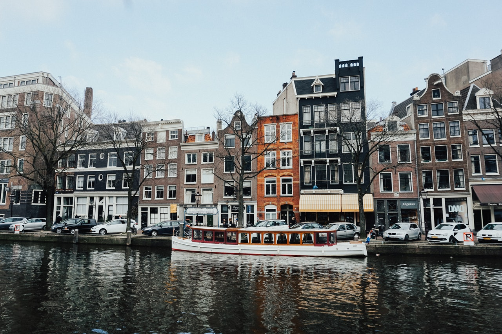
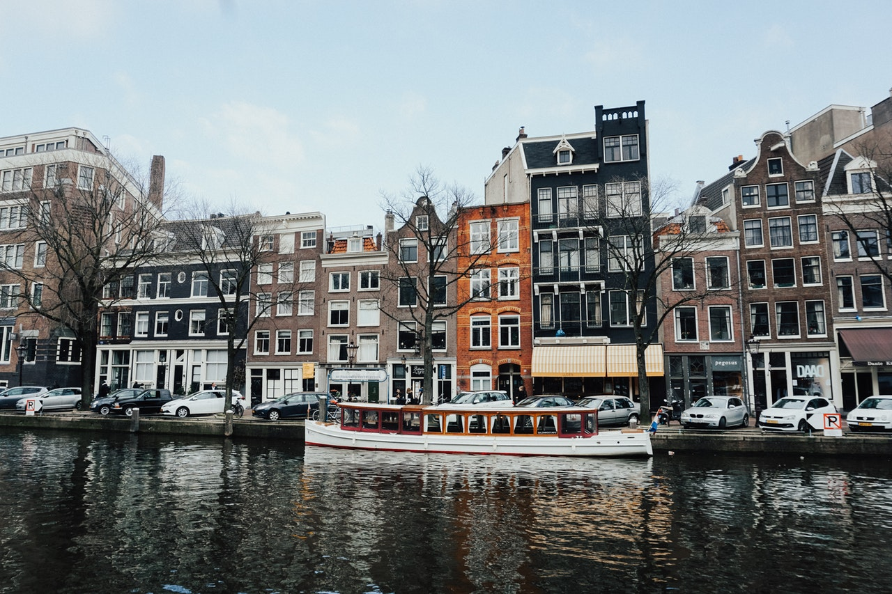

An emmy award winning visual designer with 42 dog years of experience in the digital design industry, I have an unique frame of reference. I’m equipped in broadcast, print and digital experience. Based between Washington DC and New York, I bring a unique blend of understanding with regards to government, health, sports and entertainment clientele.
An emmy award winning visual designer with 42 dog years of experience in the digital design industry, I have an unique frame of reference. I’m equipped in broadcast, print and digital experience. Based between Washington DC and New York, I bring a unique blend of understanding with regards to government, health, sports and entertainment clientele.
We help forward-thinking clients succeed in digital culture.
An emmy award winning visual designer with 42 dog years of experience in the digital design industry, I have an unique frame of reference. I’m equipped in broadcast, print and digital experience. Based between Washington DC and New York, I bring a unique blend of understanding with regards to government, health, sports and entertainment clientele.
We help forward-thinking clients succeed in digital culture.
Hi there. Thanks for visiting. My name is Doug Seidman. I am currently the Head of Product & Design at GQ.
I have spent the last 5 good years at Condé Nast. I started out as the VP of Product & Design for Condé Nast Entertainment, Condé’s digital video department and transitioned over to GQ as the Head of Product & Design. Prior to that, I had spent over a year running my own design studio full-time, Scratch, which I founded in 2006 as a side business for start-ups, and small & local businesses. I was also the design lead at Vevo since its inception, and a visual designer at several agencies including Huge, ID Society, and Draft FCB.
My focus as both a designer and product manager is to always understand, communicate, and execute upon user behavior through both quantitate and qualitative research and analysis. I aim to bring the design and engineering process closely together, focusing on creating experiences (first and foremost) for the user, while just as importantly taking business and brand needs into consideration from the start. My goal is to always test, learn, and ship quality results effeciently.
I graduated from West Virginia University with a degree in Graphic Design.
I live in NYC with my wife, my 3 year old daughter, and my dog.
In my next life, I plan on being the owner of an NBA team.